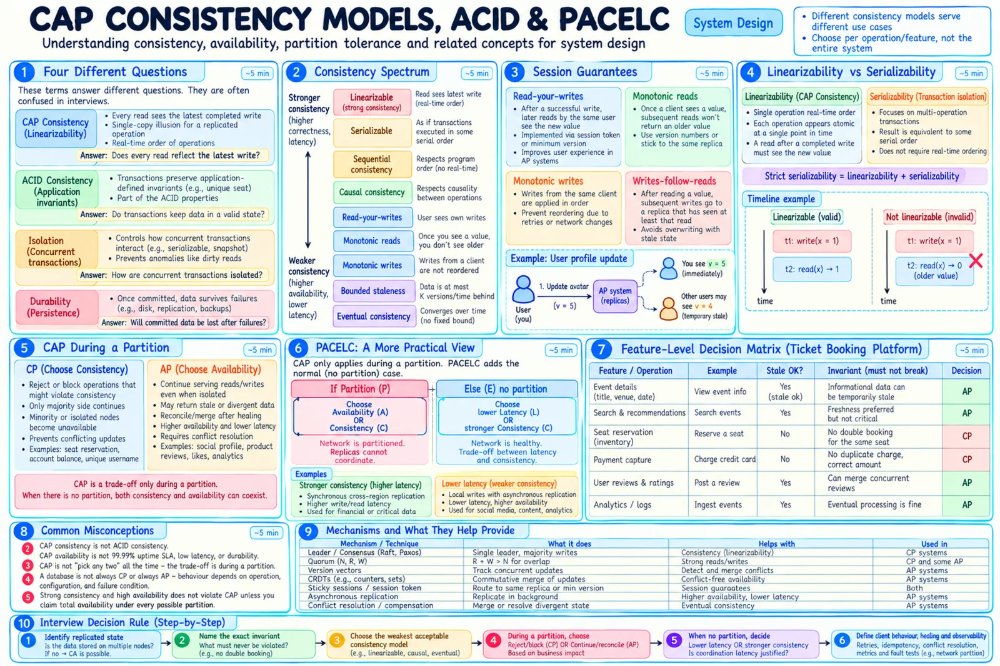

Topic · CAP Theorem in Depth
Consistency Models, ACID, and PACELC
Pick the weakest guarantee that still protects the business rule - and remember the everyday latency cost of stronger ones.


Quick Revision
- CAP C = linearizability; ACID C = invariants; isolation, atomicity, durability are separate.
- Linearizable > sequential: both have one order, only linearizable respects real time.
- Strict serializable = serializable + real-time order (often the real booking need).
- Session guarantees (read-your-writes, monotonic reads) make AP feel right to users.
- PACELC: if Partitioned → A or C; Else → Latency or C.
CAP vs ACID
| Property | Question | Mechanisms |
|---|---|---|
| CAP consistency | Atomic op in real-time order? | Leader, quorum, consensus, fencing |
| ACID consistency | Invariants preserved per transaction? | Constraints, validation |
| Isolation | How do concurrent transactions interleave? | Locks, MVCC, serializable validation |
| Atomicity | All-or-nothing commit? | WAL, transaction protocol |
| Durability | Survives failures? | Replicated log, fsync, backups |
"ACID database" says nothing about partition behavior. A key can be linearizable without multi-key transactions; an AP counter can keep its invariant without linearizable reads.
Consistency spectrum
| Model | Promise | Use |
|---|---|---|
| Linearizable | Latest completed op, real-time order | Locks, inventory ownership, leader state |
| Strict serializable | Serializable + real time | Financial/reservation transactions |
| Serializable | Equivalent to some serial order | Multi-row invariants |
| Sequential | One order, not real time | Some replicated state machines |
| Causal | Dependent ops in order | Replies, collaborative workflows |
| Read-your-writes | See your own updates | Profiles, carts |
| Monotonic reads | View never goes backwards | Sessions across replicas |
| Monotonic writes | Your writes applied in order | Ordered settings |
| Bounded staleness | ≤ K versions or T time behind | Catalog, dashboards |
| Eventual | Converge once writes stop | Search, analytics |
- Session tricks - session token/min version; never route back to an older replica; writes-follow-reads; sticky sessions.
- Read-your-writes in AP - return a version token; route to a replica that applied it, wait, fall back to the write authority, or show "not yet visible".
- Expose staleness -
version/lastUpdatedAt, non-final indicators, fail closed for security/money.
PACELC and latency
- Sync cross-region quorum - stronger, waits for WAN latency.
- Local write + async replication - fast; stale remote reads, possible failover loss.
- Bounded-staleness local read - fast with a declared freshness limit.
- Global linearizable read - stronger ordering, more tail latency.
local async ack ≈ 5 ms + processing cross-region majority ack ≈ 70 ms + processing → ~65 ms is the price of strong writes staleness ≈ queue delay + network + apply + retry/backoff + measurement error SLA (99.99%) ≠ CAP availability: CP can beat the SLA; AP can miss it
Trade-offs
| Choice | Benefit | Cost / risk |
|---|---|---|
| Sync replication | Fresher, more durable ack | Latency; unavailable when replicas slow |
| Async replication | Low latency, regional independence | Lag, failover data loss |
| Linearizable reads | Simple latest-value model | Coordination; partition-unavailable |
| Bounded staleness | Predictable freshness, lower latency | App tolerates stale window |
| Eventual | Available, fast | No immediate freshness; repair mandatory |
| Read-your-writes | Good UX without global strong | Session routing/tokens |
| Cross-region quorum | Strong multi-region | WAN latency on critical path |
| Local write + async | Low latency | Stale remote reads, harder failover |
Failure modes
- Read-your-writes breaks after region switch - min-version token, stickiness, leader fallback.
- Monotonic reads go backwards - track last-seen version; route or wait.
- Async replica promoted while behind - define RPO, pick safest candidate, recover log, audit.
- "Up" but serving stale data - measure staleness, divergence, session violations.
- Cross-region quorum p99 explodes - topology-aware placement, fewer sync regions, deadlines.
- Only average lag monitored - per-replica and per-region alerts.
Interview practice
Answer aloud, then reveal.
Linearizability vs serializability?
Linearizable: real-time order per object. Serializable: transactions in some serial order. Strict serializable: both - often what multi-record booking needs.
High availability vs CAP availability?
HA is an uptime goal; CAP A is the theoretical promise that every non-failing node responds during a partition.
What does PACELC add?
The everyday trade-off: even without a partition, stronger consistency costs coordination latency.
Make a social profile AP but show users their own update?
Write locally, return a version token, read from a replica that has applied it. Others may briefly see the old profile.
Is eventual consistency "randomly wrong forever"?
No - replicas converge if writes stop and repair works; still needs conflict ordering, anti-entropy, tombstones, monitoring.
What is causal consistency good for?
Keeping dependent actions ordered (reply after post) without globally ordering everything - better latency than linearizability.